Viktor Schauberger war ein ´Alternativer´ mit seinen erstaunlichen Aussagen zur Gestaltung von Fluid-Bewegungen. Basierend auf seinen Vorstellungen untersuchte ich die Bewegung der Moleküle von Fluid in Rohren bzw. Behältern wie auch bei der Bewegung starrer Körper in freiem Fluid. Stichwortartig aufgelistet sind die Herausragenden Ergebnisse. Diese Themen der Fluid-Technologie sind in speziellen Kapiteln umfangreich ausgearbeitet. Mutige Studenten - wie auch Praktiker - sollten die Überlegungen prüfen, zum Beispiel diese:
 |
 |
 |
 |
Grossen wirtschaftlichen Erfolg brachte meine Erfindung des ´Potential-Drall-Rohres´ (was von vielen Herstellern noch immer nicht angewandt wird). Mit meinen Ausführungen zum Düsen-Effekt wurde selbst für viele Wissenschaftler erstmals verständlich, wie der ´phänomenale´ Anstieg der kinetischen Energie des dortigen Fluid-Durchsatzes zustande kommt. Man kann Fluid vorteilhaft ´manipulieren´, d.h. mit geringem Aufwand einen größeren Effekt erreichen.
Phänomenal ist weiterhin, dass ein Dutzend Theorien zum Auftrieb an Tragflächen existiert. Alle basieren krampfhaft auf der Vorstellung Kraft = Gegenkraft, hier also nach dem Prinzip ´Luft-abwärts-drücken = Flieger-aufwärts-heben´. Tatsächlich bekommt man den Auftrieb nahezu ´geschenkt´ (eine indirekte Nutzung der Freien Gravitations-Energie). Bei geschickter Anwendung könnten z.B. Flugzeuge und Hubschrauber ohne externe Triebwerke bzw. Rotoren völlig geräuschlos fliegen.
ÄTHER-PHYSIK UND -PHILOSOPHIE
Dabei gibt es doch in aller Welt den bekannten Narrativ: Alles ist Eines. Mein ´revolutionärer´ Ansatz war nun, diese Aussage als physikalischen Fakt zu akzeptieren: es gibt real nur diese eine ´materielle´ Substanz - und alle Erscheinungen können nur jeweils spezielle Bewegungsmuster dieses Äthers im Äther sein. Und ebenso revolutionär mein Axiom: dieser Äther muss eine lückenlose Einheit sein, d.h. ohne abgegrenzte Partikel, durchgängig von gleiche Dichte - weil nur in einem solchen Kontinuum die Energie-Konstanz real existent sein kann.
Stichwortartig sind wieder Herausragende Ergebnisse aufgelistet. Ausgearbeitet ist dieses Etwas in Bewegung in vielen Kapiteln. Diese sind nicht immer leicht zu lesen, weil sie praktisch das Protokoll meiner Jahrzehnte langer Forschung bilden mit total neuen Aspekten.
Einen detaillierten Überblick bietet auch diese Zusammenfassung oder mein damaliger Nachruf auf den Äther. Ich kann nicht verstehen, wie in der offiziellen Physik diese elementare Frage nach dem Hintergrund allen Seins ignoriert wird (und der Quanten-Mechanik Teilchen-Zoo ist keine Antwort). Ich habe meinen obigen Ansatz auf etwa hundert phykalische Phänomene angewandt und brauchbare Erklärungen gefunden, vom Elektron bis Galaxis, von Atomkraft bis Gravitation. Glasklare Beweise sind vorhanden, auf knappem Raum z.B. dargestellt in Äther-Universum - Behauptungen und Beweise.
Diese Vorstellung könnte realer sein als die Wahrnehmung unserer Umwelt als eine Abfolge bunter Bilder. Auch alles ´Materielle´, wie unser Körper, ist nur unseren Sinnen vorgetäuschtes Faktum. Ohnehin definieren wir uns primär als mental-psychische Einheit. Und diese Vorstellung ist so massiv, dass unsere Seele und alles Geistige ebenso real manifestiert sein wird im Äther, im nahezu unendlich weiten Spektrum seines Schwingens. Wirklich Alles ist aus / in Einem.
ÄTHER-ELETRO-TECHNIK
Ansätze dazu habe ich in meiner
Äther-Elektro-Technik entwickelt. Zu einigen bekannten Phänomenen und ´unglaublichen´ Experimenten konnte ich plausible Erklärungen aufzeigen (siehe Magnete und Strom, Unipolar-Generator, Railgun- und Kugellager-Effekte, Tilley-Kegel-Generator, Kondensatoren u.a.).
Basierend darauf konnte ich Vorschläge zu Elektro-Motoren und -Generatoren entwickeln - welche die Freie Energie der omnipräsenten Ätherbewegungen nutzbar machen. Genau solche Over-Unity-Geräte (mehr Energie-Output als erforderlicher -Input) sind Zielsetzung oben angesprochenen ´Alternativen Physiker´. Es ist nur fraglich, wann sie tatsächlich auf den Markt kommen dürfen.
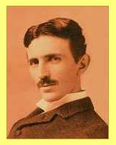 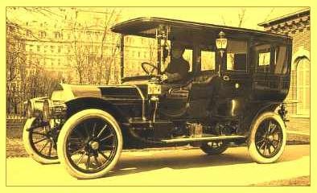 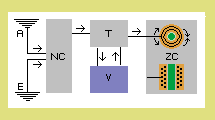
Damit ergeben sich natürlich total neue Einsichten in das Wesen elektro-magnetischer Erscheinungen, die ich in diversen Kapiteln darstellen konnte. Altersbedingt wollte und konnte ich nicht alle angedachten Themen ausarbeiten (und andere sind aufgerufen, diese Arbeit weiter zu führen). Ein letztes Mal möchte ich zur Skizze oben rechts anmerken.
NIKOLA TESLA PIERCE ARROW
Durch Sonnenstrahlung und atmosphärische Bewegungen gibt es praktisch unbegrenzte elektrische Ladung in der Luft sowie auf und in der Erde. In unserer Umgebung ist sie meinst von gleicher Stärke, so dass wir sie nicht empfinden. Wird ein Gerät (oder dieses Auto) mit der Erde (E) verbunden, dann hat es nicht keine sondern ´normale´ Ladung (NC). Auch aus der Atmosphäre (A) kann elektro-magnetische Energie mittels bekannter Antennen-Technik eingesammelt werden. Auf diverse Art könnte auch normale auf höhere Spannung transferieren werden.
Eine Ladung wird real gebildet durch strukturiertes Äther-Schwingen. Dieses Bewegungsmuster wird auf eine materielle Oberfläche gepresst durch den allgemeinen Druck Freien Äthers. Dessen chaotische Bewegungen drücken Ladungen auf zwei verbundenen Speichern nieder auf gleichen Level. Das Bewegungmuster der Ladung ist in sich so stabil, dass es niemals komplett nieder zu drücken ist.
Ein Strom kann also erst entstehen, wenn ein Spannungsgefälle besteht. Das Bewegungsmuster wird überlagert durch eine links-vorwärts gerichtete Komponente, woraus sich die Erscheinung eines Strömens ergibt (wobei der Äther selbst sich nie weit vorwärts bewegt). Wenn die Ladungen ausgeglichen werden, wird die Strömung schwächer, kommt letztlich zum Stillstand.
Teslas entscheidendes Bauelement produziert Zero-Charge (ZC), bildet eine Senke von null Ladung. Im Prinzip wird das erreicht, indem der Strom in einen in sich geschlossenen Leiter-Kreis eingespeist wird. Die gleichartigen Bewegungsmuster begegnen sich gegenläufig, addieren sich kurzfristig zu null Ätherbewegung. In diese ´Bewegungs-Leere´ schiebt der Freie Äther beide Ströme zusammen. Deren zuvor gegebene Struktur wird eliminiert, es verleibt nur Freier Äther.
Zum Starten des Systems ist die anfänglich normale Ladung zu beseitigen. Tesla schob dazu ein Holz in die Box und damit einen Magneten durch die Luft-Spule. In den gegenläufigen Windungen eliminieren sich die generierten Strömungen (zweifach angelegt für Wechselstrom). Bislang konzentrierte man sich auf die ´Produktion´ von Elektrizität. Nun also ist vorrangige Aufgabe deren ´Eliminierung´. Für diese Energie-Senke gilt es, die beste Bauvariante zu entwickeln.
Das Besondere daran ist: diese Senke wird nicht voll! Vom Öffnen bis zum Schliessen eines Schalters kann Strom ungehemmt fliessen, bei praktisch konstanter Spannung. Ladung sollte hier ohnehin niemals statisch ruhend sein. Schon in den Zwischenspeichern (NC) sollte sie fortwährend rotieren (siehe Elektro-Ring-Generator). Auch mittels Kondensator-Kaskade kann ein kurzfristiger und heftiger Stromstoss durch den Transformator (T) stürzen und den Verbraucher (V) beliefern. Der Freie Äther drückt den Speicher fast leer, so dass in der folgenden Phase wieder Energie in das System hinein fallen kann.
Das Gesetz der Energie-Konstanz bleibt gewahrt: in der Senke wird natürliche Strahlung / Ladung vernichtet, im Trafo verwertbare Energie generiert und im Verbraucher in andere Form transferiert. Letztlich hat Tesla frei verfügbare ´Radiations´ genutzt, d.h. elektromagnetische Wirbelsysteme aus der Äther-Umgebung, die (direkt oder indirekt) permanent nachgeladen werden von der Sonne. Tesla - ein wirklich Alternativer.
Vorstehende Axiome und Überlegungen zum Äther und zum Elektromagnetismus mögen befremdlich erscheinen. Andererseits konnte das bekannte Verständnis der Physik in den vergangenen Generationen das Geheimnis des Tesla-Antriebs nicht enträtseln. Jeder neue und andersartige Ansatz birgt größere Chancen für die aktuelle Energie-Problematik.
Diese letzten Anregungen zur Tesla-Elektro-Senke sind auch zum Download verfügbar.
DANKE - SERVUS - ADIEU 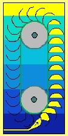
Heute nun gibt es funktionierende, autonom laufende Maschinen großer Energie-Ausbeute, etwa siebenfach größer als der erforderliche Energie-Einsatz. Diese sind reale, mechanisch arbeitende Perpetuum Mobile! Genutzt wird die ´freie Energie´ der Gravitation. Es wird aber noch immer gerätselt, warum das sollte funktionieren können. Der wesentlich Grund ist: die unten zugeführte Luft muss nicht gegen den dortigen statischen Druck hinein gepresst werden - sofern man sie in eine Strömung einbringt - analog zur Wasserstrahlpumpe - was wesentlich geringere Druck-Energie erfordert.
Dummköpfe meinten mich seinerzeit mobben zu müssen. Die Realität dieser Maschinen zwingt nun alle, neu über physikalische Möglichkeiten zur Nutzung Freier Energie nach zu denken.
Zur Erinnerung stelle ich hier ein paar Ausarbeitungen von 2014/15 meiner alten Website ein.
Flexibles Auftriebs-Kraftwerk 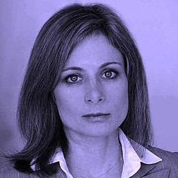
´Niemand kennt das Universum ganz genau. Aber man hat sich auf das Standardmodell geeingt. Es beginnt mit der Urknalltheorie. Und auch alles, was daraus folgt, sind Mutmaßungen.´ Deutlicher ausgedrückt: sind keine durch Fakten belegte Aussagen, vielmehr in streng wissenschaftlichen Sinne unzulässige Vermutungen, bzw. nur wertlose fiktive Rechnereien.
Das beginnt mit der Gravitationskraft, die als Natur-Konstante definiert wird - obwohl sie räumlich und zeitlich stark schwankend ist. Details hierzu siehe Wesen der Gravitation, weit unten die Abschnitte Differenzierte und Variable Schwerkraft.
Nur weil der Apfel vom Baum fällt darf man nicht beschließen, dass die Sonne ins Zentrum der Milchstrasse fallen muss. Zumal es dafür viel zu wenig bekannte Masse gibt. Man darf nicht einfach eine vielfach größere ´Dunkle Masse´ fiktiv unterstellen. ´Schwarze Löcher´ zu (er-)finden, ist absolut unwissenschaftlich. Handwerkern würde so etwas ´eklatanten Pfusch´ nennen.
Es gibt keine plausible Vorstellung davon, wie diese Anziehungskraft über Entfernungen von Lichtjahre hinweg funktionieren könnte. Dennoch unterstellt man, dass die Sonne dieser zentripetalen Kraft ausgesetzt ist. Eine entsprechend starke Zentrifugalkraft ist gegeben, wenn die Sonne sich mit 150 km/s um das Zentrum bewegt. Tatsächlich aber fliegt die Sonne mit 220 km/s viel zu schnell. Wiederum wird die Rechnung nur stimmig, wenn die vermeintliche Beschleunigung durch eine vielfach stärkere ´Dunkle Energie´ erzeugt würde. Beim nächsten Straftzettel wegen überhöhter Geschwindigkeit kann sich nun jederman auf diese faule Ausrede berufen.
Nach geltender Lehre ist also die bekannte Materie nur 5 % aller notwendiger Masse/Energie. Wenn die Wettervorhersage solche Trefferquote von 1:20 aufweisen würde, wären nicht nur die Daten mangelhaft. Zweifellos wäre dann das ganze Denk- und Rechenmodell vollkommen falsch. Die (Astro-) Physik muss prinzipiell das Verständnis von Masse, Trägheit, Energie und Gravitation neu bedenken. Anregungen sind z.B. in Milchstrasse und Sonnensystem gegeben.
Man sollte endlich beginnen, nach verständlichen und logisch sauberen Lösungen zu suchen. Per
eMail an Lisa Randall hatte ich sie eingeladen, zur Abwechslung und ohne Vorurteile den Gedankengängen eines Logik-Handwerkers zu folgen. Mal sehen, ob jemand jemals diese Anregungen aufgreift. Ein guter Ansatz wäre, meine Behauptungen und Beweise detailliert widerlegen zu wollen.
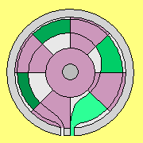
Ansätze dazu habe ich in meiner
Äther-Elektro-Technik entwickelt. Zu einigen bekannten Phänomenen und ´unglaublichen´ Experimenten konnte ich plausible Erklärungen aufzeigen (siehe Magnete und Strom, Unipolar-Generator, Railgun- und Kugellager-Effekte, Tilley-Kegel-Generator, Kondensatoren u.a.).
In der aktuellen Situation in aller Welt und allen Themen wäre dringend die Erkenntnis notwendig, dass Alles aus Einem ist, im wörtlichen und im physikalischen Sinne. Woraus sich gravierende Konsequenzen und Möglichkeiten ergäben, im materiellen Sinne und ebenso im geistigen Bewusstsein.
Ich kann altersbedingt an dieser Thematik nicht mehr weiter arbeiten. Ich hoffe aber, dass andere begreifen und weiter treiben.
Nur noch ein Mal möchte ich daran erinnern, dass wesentlicher Fortschritt in der Physik nur möglich sein wird, wenn der Äther als universelles Medium allen Seins begriffen wird. Im abschließenden Kapitel
08.23. Nachruf auf den Äther (auch als Druckversion verfügbar) sind die wichtigsten Argumente noch einmal in Kürze dargestellt.
Das Fliegen ist faszinierend, allein schon wegen der Sicht von oben, und sei es nur ´virtuell´ per Kamera- Drohne. Das Fliegen erscheint selbstverständlich, wenngleich es elementare Probleme tangiert: es ist z.B. die Schwerkraft zu überwinden - und es ist völlig ungeklärt, was Gravitation eigentlich ist. Fliegen scheint nur möglich, wenn man der abwärts gerichteten Kraft eine noch stärkere, aufwärts gerichtete Kraft entgegen stellt - und das seltsamerweise, indem Luft abwärts beschleunigt wird. Dieses ´Luft-abwärts = Flieger-aufwärts´ ist allgemein anerkannte Hypothese - obwohl sie nicht haltbar ist. Sie wird selbst von führenden Köpfen der Luftfahrt vehement verteidigt, wie ich in diversen Diskussionen erfahren musste.
Man behandelt die Luft als wäre sie ein Festkörper und als könnten darin die Gesetze Newtonscher Mechanik uneingeschränkt gelten. Tatsächlich aber bewegen sich die Luftpartikel unablässig - und es ist z.B. völlig ungeklärt, warum das dauerhaft verlustfrei möglich sein könnte. In Gasen gilt ein anderes oberstes Gesetz: die Partikel fliegen immer in Richtung geringerer Dichte. Und das Gesetz der Energie-Konstanz lautet dabei: erhöhter dynamischer Druck einer Strömung bedingt entsprechend reduzierten seitlich wirkenden, also statischen Druck.
Der wahren Ursache dieses ´dynamischen Auftriebs´ entspricht dieser ökonomische Prozess: anstatt noch höheren Gegendruck zu produzieren ist völlig ausreichend, den statischen Luftdruck an der Oberseite von Profilen zu reduzieren, indem dort eine schnellere Strömung initiiert wird.
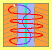
Mit dem Konus-Wendel-Motor wurde hier noch einmal ein konstruktiver Vorschlag gemacht - aber Fachleute werden bald wesentlich bessere Lösungen erarbeiten - sobald man die wahre Ursache kapiert haben, warum Flieger fliegen.
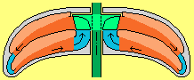
Das Modell war darauf ausgelegt, auf einfachste Bauweise das elementare Prinzip belegen zu können. Wie sich heraus stellte: es war zu simpel angelegt, so kann es nicht funktionieren!
Der Fehler konnte aber bald ermittelt werden und als Konsequenz daraus ließ sich eine verbesserte Version zur Erzeugung zweckdienlicher Strömungen ableiten.
Diese Analyse und Korrekturen sind im neuen Kapitel 05.21. Experimente und Konsequenzen dargestellt (auch als Druckversion verfügbar).
Für mich ist damit dieses Thema beendet - für Fachleute der Aero-Technik (und anderer Fahrzeug-Technik) sollte die ernsthafte Arbeit an dieser Möglichkeit erst beginnen. Weil nach wie vor, diese Konzeption des Glockenmotors absolut tauglich ist zur Erzeugung von Auftrieb und Vortrieb - und selbstverständlich sollte Profis aus misslungenen Experimenten wesentlich bessere Lösungen ableiten können. 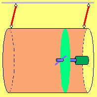
Die wichtigsten Bauelemente sind in einem einfachen Funktions-Modell dargestellt.
Ich schreibe mir die Finger wund - und kaum einer glaubt diese unglaubliche Geschichte. Wer hilft dieser Sache auf die Beine? Besten Dank im voraus! 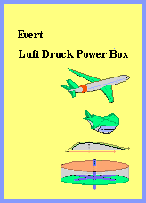
Dazu sind nun in der neuen Broschüre Luft Druck Power Box alle vier Kapitel zum Luftdruck-Glockenmotor und zur Flettner-Box zusammen gefasst, ergänzt um die zwei generellen Kapitel zum Auftrieb an Tragflächen.
In diesem Buch ist die Quint-Essenz auf einer Seite Zusammenfassung inklusiv Funktions-Modell beschrieben anhand einer einfachen Skizze.
Der historische Frachter ´Buckau´ mit Flettners rotierenden Zylindern lief besser als konventionelle Segelschiffe. 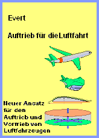
Im neuen Kapitel Aero-Statik des Glockenmotors belegen Daten-Beispiele zur A320 die neuen Erkenntnisse und Möglichkeiten.
Im Dezember 2015 wurden überarbeitete und ausgewählte Kapitel zur Aero-Technologie hoch geladen (Auftrieb an Tragflächen, Forellenmotor, Propeller- und Düsen-Vortrieb u.a.).
Ganz neu wurde nun die Erfindung des Luftdruck-Glockenmotors erarbeitet - die einer Revolution der Aero-Technik gleich kommt.
In der neuen Version wurde zunächst nur die Thematik der ´Äther-Physik und -Philosophie´ aufgenommen. In letzter Zeit wird vermehrt über Äther (oder Raum-Energie usw.) diskutiert, meist aber nur mit vagen Vorstellungen. Dagegen bietet meine Beschreibung dieses ´Etwas in Bewegung´ (auch als Buch verfügbar) präzise Aussagen. Mit dem ´Tanzen der Satelliten´ (auch als Buch) wird die Existenz eines realen Äthers zweifelsfrei belegt (z.B. auch mit Erläuterungen zu den Experimenten von Morley-Michelson u.a.). Im Internet und in der Literatur werden kaum vergleichbar fundierte Aussagen zum Äther zu finden sein.
Im Gegensatz dazu sind meine Überlegungen zur Äther-Elektro-Technik aus Sicht dieses Mediums noch nicht abgeschlossen (eventuell kann ich diese in kommenden Jahren noch ergänzen). Wichtig wäre allerdings, dass diese Ansätze von Fachleuten aufgegriffen und analog dazu alle elektromagnetischen Erscheinungen erforscht werden. Daraus ergäben sich gewaltige Konsequenzen für die Nutzung dieser Energieform.
Es erfordert räumliches Vorstellungsvermögen, die Bewegungen obiger Fluid-Partikel im 3D-Raum zu verfolgen. Nochmals schwieriger sind die Darstellung und das Verständnis der Bewegungsabläufe in einem Plasma. Darum ´verweigern´ viele Leser das Mit-Denken zum Thema Äther.


Natürlich sind meine Überlegungen nicht fehlerfrei. Obige Darstellung rechts ist z.B. falsch. Man muss die Überlagerung des ´Schwingen mit Schlag´ auf einen Wirbelknäuel genauer analysieren um zu verstehen, warum wir durchs Weltall driften. Für mich war die Erkenntnis schockierend: wir bestehen nicht aus festen Teilchen, wir bestehen nicht einmal aus einer Portion ´eigenem´ Äther, nur unser komplexes Wirbelmuster schwebt durch den (ziemlich ortsfesten) universumweiten Äther.
Dieses neue Verständnis der Basis allen Seins
könnte völlig neue Erkenntnisse in vielen Wissenschaftsgebieten eröffnen. Beispielsweise funktioniert die praktische Elektrotechnik erstaunlich gut. Tatsächlich aber weiß man nicht wirklich, was wie warum abgeht. Viele Begriffe sind nur im Zirkelschluss definiert. Bestenfalls gibt es modellhafte ´Erzählungen´. Erst mit dem konkreten Verständnis des realen Hintergrundes des Elektromagnetismus können effektivere Lösungen entwickelt werden.

Den Einstieg in die Äther-Elektro-Technik gibt das Kapitel Einführung und Zielsetzung. Wie bei meiner Definition des Äthers setzte ich auch beim Elektro-Magnetismus wiederum revolutionäre Axiome: es gibt keine Positiv-Teilchen, es gibt nur (negative) Elektronen. Es gibt keine positive Ladung, es gibt nur mehr oder weniger (negative) Ladung. Es gibt keine Anziehungskraft und keine Abstossungskraft, es gibt nur den allgemeinen Druck des Freien Äthers (mit seinen chaotischen Bewegungen) auf strukturierte Elemente (mit ihren wohl geordnetem Schwingen).
In 1931 demonstrierte Nikola Tesla ein Auto, das ohne konventionelle Energieträger funktionierte. ´Ehe viele Generationen vergangen sind ...´ vermutete er, die Nachfolger könnten ebenso Freie Energie handhaben. Offensichtlich aber hat man nicht verstanden ... oder aber Mächtige waren / sind mächtig genug, den Narrativ des ´Nicht-Machbar´ zu etablieren. Bleibt zu hoffen, dass ´ehe ein Jahrhundert vergangen ist ...´. Aus meinem Verständnis zu den Äther-Bewegungen elektromagnetischer Erscheinungen möchte ich hier noch einmal Hinweise auf Quelle und Senke der von Tesla genutzten Energie geben (siehe Skizze oben rechts).
01.01.2024 / 01.05.2015 - AUFTRIEBS - KRAFTWERKE
mit umfangreicher Darstellung der Gravitation und Konstruktions-Varianten
Auftriebskraftwerk - Perpetuum Mobile der Vierten Art
mit dem prinzipiellen Ansatz zur Nutzung Freier Energie - und dem theoretischen Nachweis der Funktionsfähigkeit dieser Maschinen
Auftriebs-Kraftwerke - warum sie wie funktionieren
womit gängige Gegenargumente entkräftet werden, inklusiv Ausblick auf künftige Entwicklungen
Perpetuum Mobile der Vierten Art
Schon 2002 wurde das PM 3.Art abgeleitet aus Erfahrungen mit Rotorsystemen (und ist kaum mehr relevant).
PM 4.Art jedoch ist ein allgemein gültiges ´Gesetz´ zur Nutzung Freier Energie. Nach diesen Regeln werden auch Maschinen in anderen Sachgebieten zu konzipieren sein - mit Energie-Überschuss.
15.04.2023 - PULSSCHLAG des KOSMOS
 Herzlich willkommen, liebe Besucher dieser Website.
Herzlich willkommen, liebe Besucher dieser Website.
Ob Phaeton den Sonnenwagen seines Vaters Helius geschrottet hatte oder Hubbel großartige neue Bilder liefert - die Prozesse im Kosmos sind mystisch.
Alles ist in Bewegung, meist sehr viel harmonischer als diese simple Animation zeigen kann. Wir spüren nichts davon, jedoch driften wir alle durchs All, sanft vorwärts geschoben durch ´kosmischen Pulsschlag´.
Wenn Ihnen solches mysteriös erscheint, lesen Sie ein paar Seiten dieses Artikels
Äther-Universum, Behauptungen und Beweise. Physik pur.
Sie werden Perspektiven erkennen und wissen, warum Sie diese Website intensiv studieren sollten.
Eine Zeitenwende ist notwendig und angesagt, ganz konkret in physikalisch technischem Sinne - und ein neues Bewusstsein könnte nicht schaden.
21.03.2023 - PROF. LISA RANDALL
15.03.2023
KLIMA-Wandel erfordert neue ENERGIEN
durch neues Verständnis der ELEKTIZITÄT


Der Klimawandel ist nicht durch Verbote gängiger Technik abzuwenden, vielmehr nur durch die Schaffung besserer Methoden. Es muss sehr viel mehr elektrischer Strom erzeugt werden. Elektrizität funktioniert erstaunlich gut - obwohl keiner wirklich weis warum.
Es wurde mit vielen abstrakten Begriffen ein ´modellhaftes´ Verständnis produziert. Erst mit dem konkreten Verständnis des realen Hintergrundes des Elektromagnetismus können effektivere Lösungen entwickelt werden.
Basierend darauf konnte ich Vorschläge zu Elektro-Motoren und -Generatoren entwickeln - welche die Freie Energie der omnipräsenten Ätherbewegungen nutzbar machen.
Das ist erst der Anfang neuen Physik-Verständnisses und neuer Energie-Nutzungen. Es erfordert junge rebellische Menschen, das zu verstehen und zu realisieren.
01.03.2023 - Wieder online
Weil noch immer Interesse besteht, habe ich diese Website nun doch wieder online gestellt.
01.12.2017 - Nachruf auf den Äther
Seit 20 Jahren besteht diese Website. Das Internet vergisst nichts. Darum ist es Aufgabe der Anbieter, überholte Beiträge zu löschen. In 2018 werde ich darum die Website www.evert.de komplett löschen.
31.12.2016 - Magie des Fliegens - Konus-Wendel-Motor
Ein letztes Mal zu diesem Thema, ein neues Kapitel:
05.22. Magie des Fliegens - Konsus-Wendel-Motor (auch als Druckversion verfügbar).
Zwei Kollegen bauten tatsächlich Funktionsmodelle und ich selbst baute ebenfalls eine Version. Selbstverständlich ergab sich das erwartete Ergebnis: ein totaler Flop, völlig wertlose Verschwendung von Zeit und Geld!
Im neuen Buch
ist die Erfindungen auf den Punkt gebracht, in einer Zusammenfassung auf einer Seite.
Auch diese Zusammenfassung ist als separate pdf-Druck-Datei verfügbar.
Wenn jemand dieses Funktionsmodell bauen würde und man per Video den Effekt sehen könnte - wäre alles plötzlich total selbstverständlich.
Alle Kapitel sind hier als pdf-Dateien zum Download und Ausdrucken verfügbar.
Besser lesbar sind Texte jedoch in gedruckter Form.
 15.03.2016 - Diskussion und Flettner-Box
15.03.2016 - Diskussion und Flettner-Box
Die Nutzung der Freien Energie molekularer Bewegung ist bislang nicht üblich oder gar ´unglaublich´.
In Kapitel Pro und Kontra zum Glockenmotor wird an einigen Beispielen aufgezeigt,
dass und warum diese Effekte ´selbstverständlich´ wirksam sind.
Dieses Prinzip ist auch unabhängig vom natürlichen Wind zu fahren, als geschlossenes System, zu Wasser und an Land - und als Rotation-Kraft-Maschine.
Diese Flettner - Box kann also nicht nur Vortrieb, sondern auch mechanisches Drehmoment erzeugen, z.B. zum Antrieb eines Elektro-Generators.
Die Texte und Zeichnungen zur Erfindung des Glockenmotors sind nun auch als Buch verfügbar
31.01.2016 - Aero-Statik des Glocken-Motors
Es war notwendig, die völlig neuen Gesichtspunkte noch einmal heraus zu arbeiten:
diesen gravierenden Unterschied zwischen mechanischer Hubarbeit nach dem Rückstoss-Prinzip
und dem Auftrieb nach den Regeln der Hydro-Statik und Aero-Dynamik.
Einen kurzen Überblick bietet der Artikel Auftrieb in der Flug-Technik.
31.12.2015 - Fluid-Technologie / Erfindung des Glocken-Motors
In einem zweiten Sachgebiet konnte ich wohl ebenfalls gelungene Analysen vorlegen: zur ´Fluid-Technologie´.
Nach Überarbeitung und Reduktion auf wesentliche Themen wurden im November 2015 erste Teile wieder hoch geladen (Grundlagen).
Einen kurzen Überblick bietet der Artikel Luftdruck-Glockenmotor - neue Aero-Technik.
30.06.2015 - Revision der Website
Diese Website ist seit vorigem Jahrhundert auf über 2500 Dateien mit mehr als 80 MB angewachsen. Es war also dringend eine Bereinigung notwendig mit einer Begrenzung auf die wichtigsten Aussagen.
Home